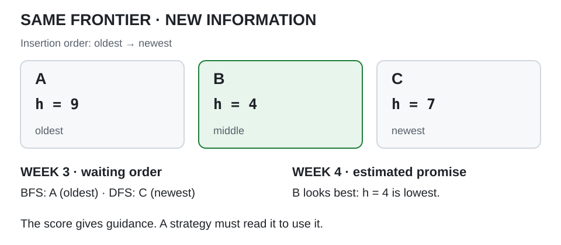
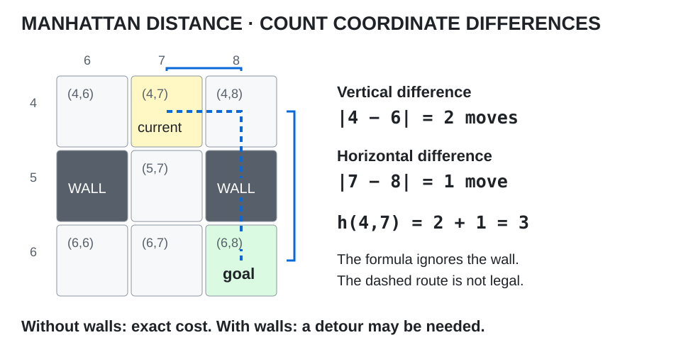
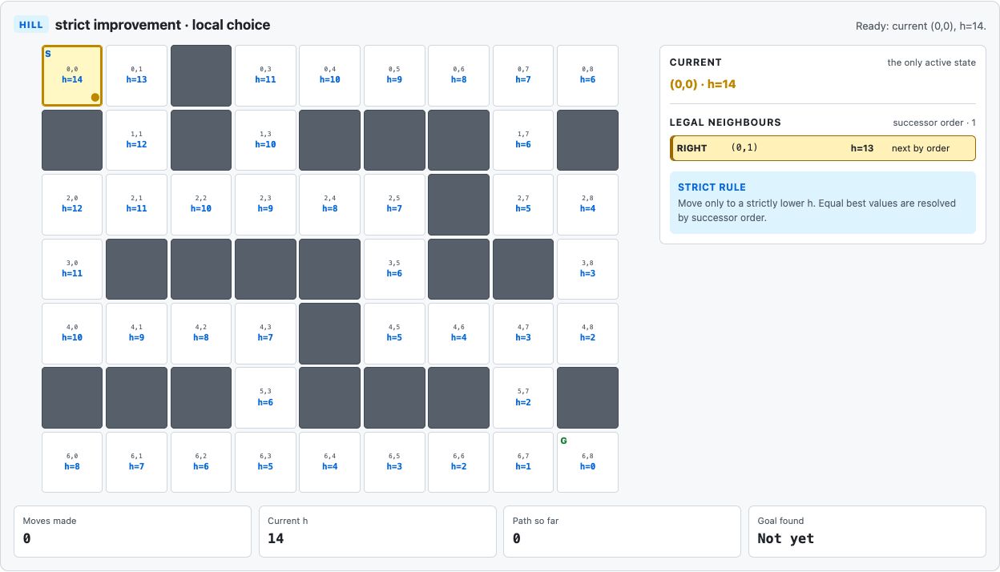
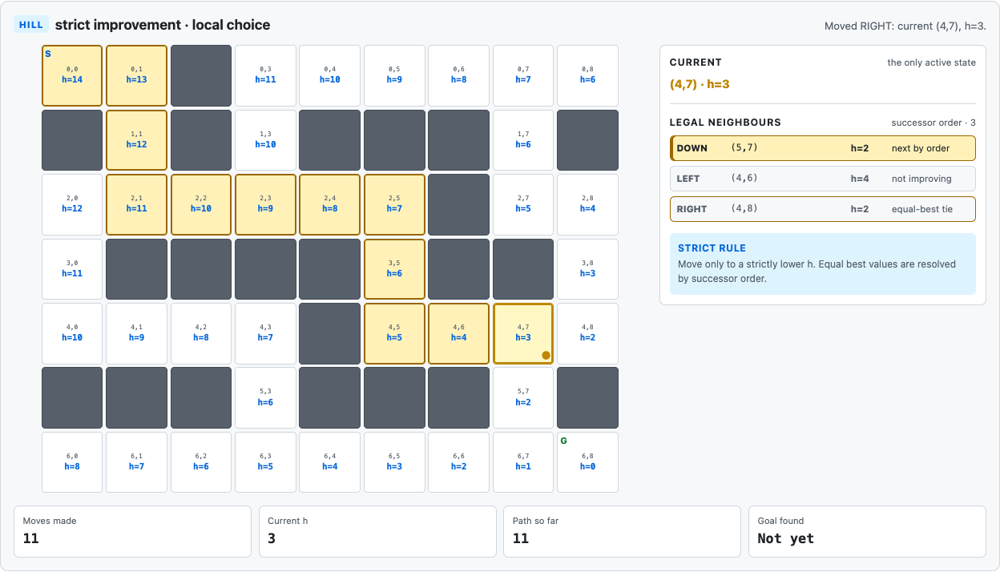
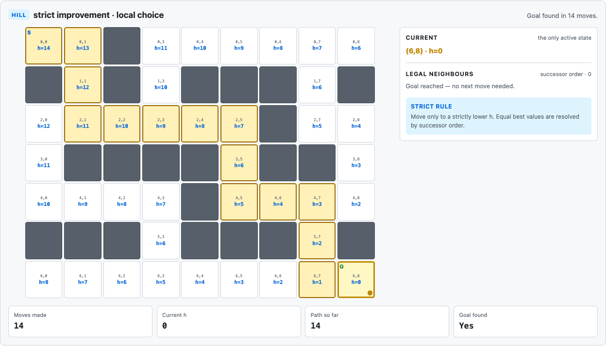
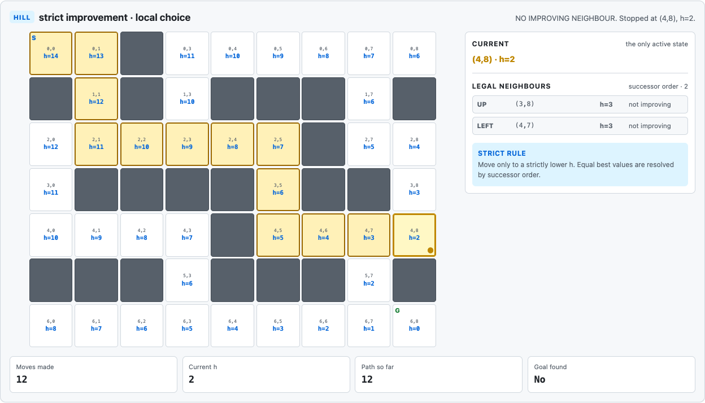

A hint — what blind search was missing
Suppose the search frontier contains three states: A, B and C.
Breadth-first search may choose the oldest.
Depth-first search may choose the newest.
Neither asks whether A, B or C appears to be closer to the goal.
That is what made them uninformed, or blind, search strategies.
What does blind search already know?
Blind does not mean random.
BFS and DFS follow exact rules.
They know:
- the initial state
- the goal test
- the legal actions
- the transition model
- the states already reached
- the states waiting on the frontier
What they do not have is problem-specific information that ranks non-goal states by how promising they seem.
That is the gap we fill this week.
What changes when the frontier has scores
Suppose we attach a number, h(state), to every state and interpret smaller values as:
this state appears closer to the goal
Then instead of seeing three undifferentiated states, the machine may see:
A, withh = 9B, withh = 4C, withh = 7
Now there is a reason to prefer B.
The number did not come from BFS or DFS.
It came from knowledge about the particular problem.
A strategy becomes informed when that information influences its choice. Merely calculating the numbers is not enough.
In the formal vocabulary: the information is supplied in advance, and an evaluation function is what puts it to work.

What a heuristic is
For our maze, h(state) is a cheap estimate of remaining distance or cost to the goal. Computing it should take much less work than solving the remaining route. It need not equal the real cost, and it guides search only if the decision rule uses it.
Are the estimate, true cost and goal test the same?
Keep three ideas separate:
- goal test — the exact question, “have we finished?”
- true remaining cost — what it will actually take to reach the goal
- heuristic estimate
h(state)— how much work we cheaply estimate is left
The goal test can be exact while the heuristic is imperfect.
For example:
def is_goal(state):
return state == GOALtells us with certainty whether the maze is solved.
A heuristic such as distance-to-goal is trying to answer a different question:
How good does this unfinished state look?
That answer may be wrong.
Where this maze gets its hint
The maze already records the current cell and the goal cell. Their row and column differences give us a distance estimate without searching any route. We will calculate it next.
That estimate depends on the problem. BFS's queue and DFS's stack work without geometric information; a maze-distance heuristic uses it explicitly.
A heuristic is not hidden knowledge of the correct solution. It may help direct search effort, but the goal test still decides whether the maze is solved.
Why this matters this week
Week 2 defined what a problem looks like to the machine.
Week 3 defined systematic ways to explore it without guidance.
This week we introduce information that can distinguish one legal state from another.
The question is no longer only:
Which state is waiting next?
It becomes:
Which state looks worth trying?
Now we need a heuristic simple enough to see.
The same maze, now with a hint
We keep the exact maze from Weeks 2 and 3.
(0,0) and same goal at (6,8). Every cell is addressed by (row, column). This week adds one number to each open cell and nothing else. Diagram created for these pages; no external image licence is used.Nothing in the problem definition changes:
START = (0, 0)GOAL = (6, 8)- the same walls
- the same legal moves
- the same
neighbours(state)andis_goal(state)functions
The only addition to the problem information is heuristic(state); the hill-climbing controller follows in Highlight 3.
Why count horizontal and vertical moves?
Our agent can move only UP, DOWN, LEFT or RIGHT, with one unit of cost per move.
Suppose we temporarily ignore the walls and ask:
How many horizontal and vertical moves separate this cell from the goal?
For a state (row, column) and goal (goal_row, goal_column), h(state) = |row - goal_row| + |column - goal_column|.
This is Manhattan distance. Each move can change only one coordinate by one. Without walls, we must cover the row difference and the column difference, and doing exactly those moves reaches the goal. Their sum is therefore the exact cost in the wall-free grid.

With walls, the real route may require a detour. Manhattan distance remains cheap to calculate and informative about separation, but imperfect about the work actually left.
In Python:
def heuristic(state):
row, col = state
goal_row, goal_col = GOAL
return abs(row - goal_row) + abs(col - goal_col)For our goal (6,8):
| State | h(state) |
|---|---|
(6,8) | 0 |
(6,7) | 1 |
(4,8) | 2 |
(4,7) | 3 |
(2,3) | 9 |
(0,0) | 14 |
Smaller means:
closer according to this estimate
What the heuristic ignores
Manhattan distance uses only the current and goal coordinates. It ignores walls, dead ends and corridors, so it cannot tell whether a direct route is legal.
The wall still matters to neighbours(state): it blocks movement. It contributes nothing to heuristic(state). These functions read different parts of the same problem definition.

h on the unchanged maze. The start is h = 14, the goal is h = 0, and walls receive no value. Screenshot created from the Search Lab for these pages; no external image licence is used.Which neighbour looks better at (2,3)?
Return to the Week 2 example state (2,3) and evaluate its legal neighbours:
| Action | Neighbour | h |
|---|---|---|
UP | (1,3) | 10 |
LEFT | (2,2) | 10 |
RIGHT | (2,4) | 8 |
Week 2 could tell us all three were legal.
Week 3 could put all three on a frontier.
Now we can say:
RIGHT looks better under this heuristic.
That is the new information.
Showing h does not change a blind search
h does not change a blind searchThere is a useful experiment here.
Run BFS on the maze with the heuristic numbers displayed.
Nothing changes.
Run DFS with the same display.
Nothing changes.
Why?
Because neither algorithm reads h(state).
The information exists, but the strategy ignores it.
Adding information to the screen does not make an algorithm informed.
The information must actually influence the decision rule.
How do we run the controlled experiment?
Open the Search Lab and keep the default maze and successor order selected.
- Turn Show Manhattan h on. Inspect
(2,3)and predict which neighbour the score favours. - Select BFS, reset and run. Compare with its Week 3 traversal.
- Select DFS, reset and run. Again, the overlay changes no decisions.
- Switch to Hill climb and step through the legal-neighbour evaluations. Now the displayed score determines the move.
The representation and transitions remain fixed. Week 2 supplied legal options, Week 3 organised waiting states, and this week adds information a decision rule can use. We finish this experiment in Highlight 4 by changing only successor order.
Does a lower h guarantee a better route?
The start has h = 14 and the goal has h = 0. Reducing the number seems like progress, but the calculation ignores walls. A cell can be close to the goal and still require a detour. The trap at (4,8) will expose that difference.
Why this matters this week
The machine can now say “this neighbour looks better”, but a score alone is not a search method. We need a rule that acts on it:
if one neighbour looks better, move there
That is hill climbing.
Hill climbing — always take the better neighbour
Hill climbing is a local-search rule: repeatedly compare the current candidate with its neighbours and move to an improvement.
This week we use a deliberately strict best-improvement version of hill climbing. Other variants need not use these acceptance and tie rules.
At each step:
- inspect all legal neighbours
- evaluate them — for our maze, lower
his better - choose the neighbour with the best strictly improving value
- use successor order to break an equal-best tie
- stop if no neighbour is strictly better; otherwise move and repeat until the goal
This version accepts no equal or worse value, makes no fresh start, and keeps no alternative routes for later.
The same process has three ingredients:
- a representation of the solution
- an evaluation function
- a neighbourhood around the current solution
Those three pieces should now look familiar.
How little code does the rule need?
From Week 2 we already have neighbours(state). From this week we now have heuristic(state).
So the basic hill-climbing decision is:
def best_improving_neighbour(state):
options = neighbours(state)
better = [
next_state
for _, next_state in options
if heuristic(next_state) < heuristic(state)
]
if not better:
return None
return min(better, key=heuristic)Then:
current = START
while not is_goal(current):
next_state = best_improving_neighbour(current)
if next_state is None:
break
current = next_statePython’s min returns the first minimum it encounters, so the order supplied by neighbours(state) breaks an equal-best tie. The < comparison filters out equal and worse values before selection.
The important word is improving: the evaluation must say the move is better.
Why "hill climbing" when the number gets smaller
Hill climbing means repeated local improvement. In the classic analogy, higher is better. In our maze, lower h is better, so improvement means descending the heuristic value. The evaluation function determines which direction counts as better.
Which information decides the next move?
Hill climbing keeps no broad frontier or alternative routes for later. Its decision uses the current neighbourhood:
Which neighbour looks best now?
It does not ask:
Which complete path will eventually be best?
Those are different questions.
What does the rule do at (2,3)?
From (2,3), where h = 9:
| Action | Neighbour h | Decision |
|---|---|---|
UP | 10 | reject |
LEFT | 10 | reject |
RIGHT | 8 | select (2,4) |
From (2,4), where h = 8, LEFT returns to h = 9 while RIGHT reaches (2,5) with h = 7. Hill climbing selects RIGHT again.
The apparent purpose comes entirely from the score. The machine has not discovered the maze's corridor structure.
What counts as a neighbour
The three ingredients are not really about mazes. Any problem a local-search rule can attack has to supply all three:
- Representation — what a candidate is. Here, a location
(row, column). - Neighbourhood — what counts as one step away. Here, the legal adjacent cells.
- Evaluation — the score that compares candidates. Here,
h(state), lower preferred.
The representation says what can change, the neighbourhood says what one change means, and the evaluation says whether it helps. Changing any of these can change hill-climbing behaviour.
Next week we put the same three to work on a problem with no grid, no coordinates and no remaining distance to estimate — and the evaluation there will not be a heuristic estimate at all.
What does this local rule buy us?
Hill climbing can use very little search memory, avoid exploring much of the state space, and move quickly towards apparently good states. It keeps a current candidate and compares nearby alternatives instead of maintaining a broad frontier.
The trade-off is that local improvement does not imply global success. Our maze lets us test that immediately.
Why this matters this week
Hill climbing turns a heuristic estimate into behaviour.
We have now moved from “this state looks better” to “move to the better-looking state.”
That can save enormous amounts of search.
But it also introduces a new failure mode:
what if every nearby move looks worse, even though a real solution still exists?
We do not need a new example to answer that.
The maze is already waiting.
A useful hint can still mislead
Move through the maze until we reach (4,7). The goal is (6,8), so Manhattan distance gives h(4,7) = 3.
Two legal moves improve the score equally:
DOWN → (5,7), withh = 2RIGHT → (4,8), withh = 2
Both are legal, improving and allowed by the strict rule. Both satisfy the rule. Only one leads this run to the goal.

(4,7), the Search Lab shows DOWN and RIGHT as equal-best improving neighbours. The default successor order lists DOWN first. Screenshot created from the Search Lab for these pages; no external image licence is used.What happens when DOWN or RIGHT wins the tie?
Choose DOWN first and the run succeeds: (4,7) → (5,7) → (6,7) → (6,8), with h falling 3 → 2 → 1 → 0.
Choose RIGHT first and the run enters (4,8), with h falling from 3 to 2.
Now inspect the legal neighbours of (4,8).
The cell below, (5,8), is a wall.
The remaining legal moves are UP → (3,8), h = 3 and LEFT → (4,7), h = 3.
Every legal move makes the heuristic worse.
Strict hill climbing refuses them.
So it stops with NO IMPROVING NEIGHBOUR.
DOWN first — successful run | RIGHT first — trapped run |
|---|---|
 |  |
Figure 6. Two Search Lab runs differ only in successor order at the equal-best tie. DOWN first reaches the goal; RIGHT first stops at (4,8) with legal neighbours still available. Screenshots created from the Search Lab for these pages; no external image licence is used.
How much work is actually left
At (4,8), the goal test is false and the heuristic says 2 moves. But the wall at (5,8) blocks the direct descent. The actual shortest remaining route is:
h along the shortest remaining route from (4,8). The first move to (4,7) raises h from 2 to 3; the three that follow lower it to 0. Strict hill climbing accepts only strictly improving moves, so it refuses the first step and never reaches the rest. Diagram created for these pages; no external image licence is used.That costs 4 moves. The first move increases h, so strict hill climbing rejects it even though it belongs to a shortest route from this state.
This is Highlight 1's distinction made concrete:
- Goal test: false — we have not finished.
- Heuristic estimate:
h(4,8) = 2. - True remaining cost:
4.
Both UP and LEFT remain legal, with h = 3. The problem definition permits them; the evaluation and acceptance rule reject them.
Hill climbing has not run out of legal moves.
It has run out of moves it is willing to accept.
To reach the goal from this position, the algorithm would first have to make a move that looks worse according to its heuristic.
Strict hill climbing refuses to do that.
Was the hint useless because the run failed?
No. Manhattan distance cheaply guided the run towards the goal for most of the route. At the trap, it ignores a wall the route must respect. Useful guidance can still mislead; the failure comes from combining that estimate with a rule that accepts only immediate improvement.
What changed between the two runs?
At (4,7), the evaluation cannot distinguish DOWN from RIGHT. Successor order resolves the tie, changing success into failure while the maze, start, goal, heuristic and strict hill-climbing rule remain identical.
This connects directly to Week 3, where successor order altered DFS. Algorithm names do not uniquely determine every observed traversal when ties remain unresolved.
One good run proves nothing
With the default successor order, hill climbing reaches the goal in 14 moves, also a shortest path for this maze. Does that observed result establish a guarantee?
No. This particular run, on this maze, with this tie-breaking order, happened to return a shortest path. The alternate order fails completely despite a reachable goal. This counterexample disproves a guarantee of finding a solution. The successful run supplies no general shortest-path guarantee either.
This is the Week 3 comparison discipline again: an observed result is not an algorithmic guarantee. A successful demonstration tells us what happened under its conditions; it does not establish what must happen on other runs.
What is local about this minimum?
At (4,8), h = 2 and every legal neighbour has a larger value. It is therefore a local minimum of h under the chosen neighbourhood.
This is the structural failure called becoming trapped in a local optimum. The term describes the evaluation relative to nearby candidates. It does not mean (4,8) solves the maze or is a globally optimal solution.
The goal with h = 0 is reachable, but the route above begins 2 → 3. Our strict rule cannot take that first step.
Reproducing the comparison
Continue the Search Lab experiment from Highlight 2:
- With Hill climb and
UP → DOWN → LEFT → RIGHT, step to(4,7)and inspect the equal-best tie. - Finish the run.
DOWNwins and the goal is reached in 14 moves. - Change neighbours() order to
UP → RIGHT → DOWN → LEFT, reset and re-run. - At
(4,8), inspect both rejected legal neighbours and the NO IMPROVING NEIGHBOUR message. - Compare the displayed
h = 2with the four-move route back through(4,7). Identify the first move the strict rule will not accept.
Keep the maze, heuristic and starting state fixed throughout. Successor order is the experimental change; success or failure is the observed consequence.
Why this matters this week
We began by asking whether a useful guess could save us from searching everything.
The answer is:
yes — but guidance changes the trade-off rather than removing it
The heuristic supplies an estimate; the evaluation lets the rule compare candidates; hill climbing acts on that comparison locally. It can save search effort, but its refusal to accept a temporary worsening can leave a reachable goal unfound.
The same maze has shown both the benefit and the cost. We end with that failure still visible.